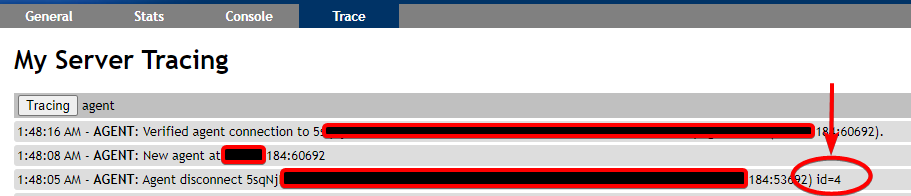

Debugging
Websockets Video¶
Make sure you understand how MeshCentral works with your browser using chrome developer tools.
MeshCentral Server¶
Useful config.js settings¶
https://github.com/Ylianst/MeshCentral/blob/master/meshcentral-config-schema.json
"AgentsInRAM": false,
"AgentUpdateBlockSize": 2048,
"agentUpdateSystem": 1,
"noAgentUpdate": 1,
"WsCompression": false,
"AgentWsCompression": false,
Enabling trace in your browser Dev Tools¶
Trace=1 as a parameter in chrome dev tools for debugging
To log all database queries, change log_statement in /etc/postgresql/13/main/postgresql.conf
# CUSTOM
log_statement = 'all' # none, ddl, mod, all
The stacktrace was logged to stdout/journalctl. Supposedly, you can enable debug logging for node modules by adding DEBUG=<modulename> to the environment.
Adding this to /etc/systemd/system/meshcentral.service should do it but it didn't seem to do anything.
I think that's because Mesh uses the trace logging in the browser instead of logging things in the server logs.
Environment=DEBUG=mesh*
If you want to change node to meshcentral in journalctl, add this to /etc/systemd/system/meshcentral.service.
SyslogIdentifier=meshcentral
Logging it all¶
To log everything that's possible, prepare the log directory.
mkdir /meshcentral/meshcentral-logs/
chown tactical:tactical logs
ln -s ../meshcentral-logs/log.txt /meshcentral/meshcentral-data/log.txt
And then add this to your config.
"meshErrorLogPath": "/meshcentral/meshcentral-logs/",
"authLog": "/meshcentral/meshcentral-logs/auth.log",
"log": [
"cookie",
"dispatch",
"main",
"peer",
"web",
"webrequest",
"relay",
"webrelaydata",
"webrelay",
"mps",
"mpscmd",
"swarm",
"swarmcmd",
"agentupdate",
"agent",
"cert",
"db",
"email",
"amt",
"httpheaders",
"websocket"
],
You'll then have 3 files:
-rw-rw-r-- 1 tactical tactical 2593 Feb 2 12:22 auth.log
-rw-r--r-- 1 tactical tactical 147593 Feb 2 12:31 log.txt
-rw-rw-r-- 1 tactical tactical 381 Feb 2 12:02 mesherrors.txt
log.txt will now log everything in the Trace tab
Restricting server to specific IP(s)¶
When doing debugging on my development server, I use this line in the settings section to block all agent connections except the agent I want:
"agentAllowedIp": [ "192.168.2.147" ],
Of course, this is just for debugging.
Finding system ID types¶
https://serverurl/meshagents aka trying figure out what this is

Pull down cert .crt file from internet¶
See #1662 We have run into this challenge before, where our .crt file expired and then all our agents were unable to connect. In our case, the TLS cert was available on the internet, and thus, we were able to use these commands to update it:
echo -n \| openssl s_client -connect yourdomain.com:443 2> /dev/null\| sed -ne '/-BEGIN CERTIFICATE-/,/-END CERTIFICATE-/p' > /opt/meshcentral/meshcentral-data/webserver-cert-public.crt
service meshcentral restart
MeshAgent¶
Agent Debug Logs to server¶
This automatically downloads all agent error logs into meshcentral-data/agenterrorlogs.txt
Set in config.json
"agentLogDump": true
Determine Agent capabilities¶
On the server goto the agents console tab. Type:
info
Useful MeshAgent.msh flags¶
https://github.com/Ylianst/MeshAgent/blob/master/meshcore/agentcore.h#L190
controlChannelDebug=1
logUpdate=1
Obtain generated .msh File¶
If you need a trick to get the .msh file, you can add ?debug=1 to the URL and click "Add Agent", there will be an extra link to download it.
MeshAgent Commands¶
MeshAgent run
MeshAgent dbTool.js list
Forcing Core version from Cmdline
- Download meschore.js and rename to CoreModule.js and put it alongside MeshAgent.exe
- Stop MeshAgent service
- Run
MeshAgent.exe dbTool.js import CoreModule
On the fly Patching MeshAgent¶
There are two ways to do this... When debugging, and making changes, you can modify the .js file directly, and just save it in the same folder as the agent binary... The agent will use the .js file from disc if it's there, if it's newer than the one compiled in the binary. You don't even need to restart the agent. You can just clear the core, and reload the core.....
When you are satisfied with your changes to the .js file, you can use the clipboard, in the following fashion:
meshagent -exec "require('clipboard').nativeAddCompressedModule('foo');process.exit();"
if the file you modified isn't in the same folder as the agent binary, you can use the following command if you don't want to move the file, and edit it directly in the modules folder:
meshagent -exec "setModulePath('pathToFolder');require('clipboard').nativeAddCompressedModule('foo');process.exit();"
This command is just like the previous, except it searches for modules in the path specified.
Just substitute foo, with the name of the module that you modified. It will load the module from disc, compress it, and save it into the clipboard.. So you can just load up your editor for ILibDuktape_Polyfills.c, and find where that particular module is defined... and paste directly from the clipboard... The clipboard will contain all the necessary C code to uncompress and load the module.
If the compressed result is relatively long, it will auto break it up into multiple lines to work around an issue with visual studio's maximum string literal limitations.
Agent Debugging using MeshCore JS Debugger¶
(#119) How to test changes to the meshagent and recompile them.
- Copy duktape-debugger.js to the mesh directory on the target machine.
- From the console tab of the agent, enter this command, substituting the port number you want to use instead of 9999
eval "attachDebugger({ webport: 9999 })"
Then open your browser to http://localhost:9999 or whatever port you used.
Note
If you pause the debugger, and happen to forget about it, the agent will automatically kill itself and restart because it will think that a thread is stuck. Default debugger timeout is 10 minutes, you may find a log entry saved to disk saying "Microstack Thread STUCK", or something similar.